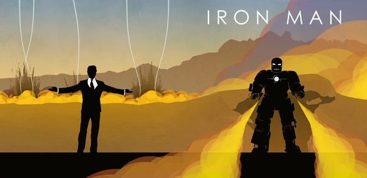

Avengers..Earth's Mightiest Heroes stand as the planet's first line of defense against the most powerful threats in the universe. The Avengers began as a group of extraordinary individuals who were assembled to defeat Loki and his Chitauri army in New York City.

My favourite Hero
Steve Rogers was born during the Depression and grew up a frail youth in a poor family. His father died when he was a child, his mother when he was in his late teens. Horrified by newsreel footage of the Nazis in Europe, Rogers was inspired to try to enlist in the Army. However, because of his frailty and sickness, he was rejected. Overhearing the boy's earnest plea to be accepted, General Chester Phillips of the U.S. Army offered Rogers the opportunity to take part in a special experiment called Operation: Rebirth. Rogers agreed and was taken to a secret laboratory in Washington, D.C. where he was introduced to Dr. Abrahan Erskine (code named: Prof. Reinstein), the creator to the Super-Soldier formula.
After weeks of tests, Rogers was at last administered the Super-Soldier serum. Given part of the compound intravenously and another part orally, Rogers was then bombarded by "vita-rays," a special combination of exotic (in 1941) wavelengths of radiation designed to accelerate and stabilize the serum's effect on his body. Steve Rogers emerged from the vita-ray chamber with a body as perfect as a body can be and still be human. A Nazi spy who observed the experiment murdered Dr. Erskine mere minutes after its conclusion. Erskine died without fully committing the Super-Soldier formula to paper, leaving Steve Rogers the Sole beneficiary of his genius.
Roger was then put through an intensive physical and tactical training program,teaching him gymnastics, hand-to-hand combat and military strategy. Three months later, he was given his first assignment, to stop the Nazi agent called the Red Skull. To help him become a symbolic counterpart to the Red Skull, Rogers was given the red, white, and blue costume of Captain America.
During the war, he served as both a symbol of freedom and America's most effective special operative. Then, during the final days of the war, he was trying to stop a bomb-loaded drone-plane launched by Nazi technician Baron Heinrich Zemo when the plane exploded, killing his partner Bucky; and throwing him unhurt into icy Arctic waters. The Super-Soldier formula prevented crystallization of Captain America's bodily fluid, allowing him to enter a state of suspended animation. Decades later, he was rescued by the newly-formed Avengers and became a cornerstone of the team. His might undiminished. Captain America remains a symbol of liberty and justice.